Pole pod pásom dní pri ďalších dňoch
Pri dnešku je pod pásom 4 dní pole toku (slnko → dom → sieť). Pri zajtrajšku a ďalších dňoch je tam teraz hláška triedy dňa („Oskar na plný koule“). Hlášku nahradí riadok, ktorý vyzerá ako pole toku: ikony, veľké biele čísla s jednotkou a tenká čiara medzi nimi. Pole ostáva vysoké 44 px, takže dlaždice stoja v každom dni na tom istom mieste.
Ako vznikli obrázky: sú to snímky skutočnej appky v rozmeroch telefónu (390 px, písmo appky) s dátami z testov (sobota 5. 9. 2026 o 13:00). Do poľa som vložil HTML každého variantu a zmeral, že má 44 px a nepretečie. kWh dní sú z predpovede appky, časy okna som prečítal z pásu dňa a zaokrúhlil na 15 minút. Spotrebu domu (14 kWh) vo variante B som si vymyslel – testovacie dáta nemajú naučený model, appka by ju brala z neho. V appke zatiaľ nič nemením.
Teraz v appke
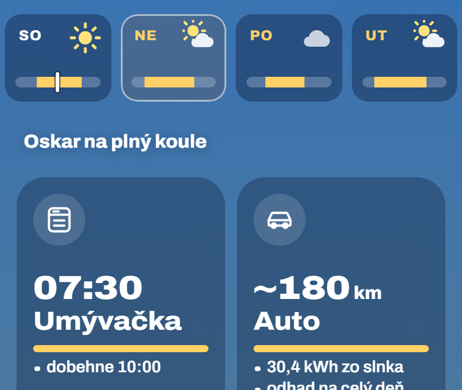
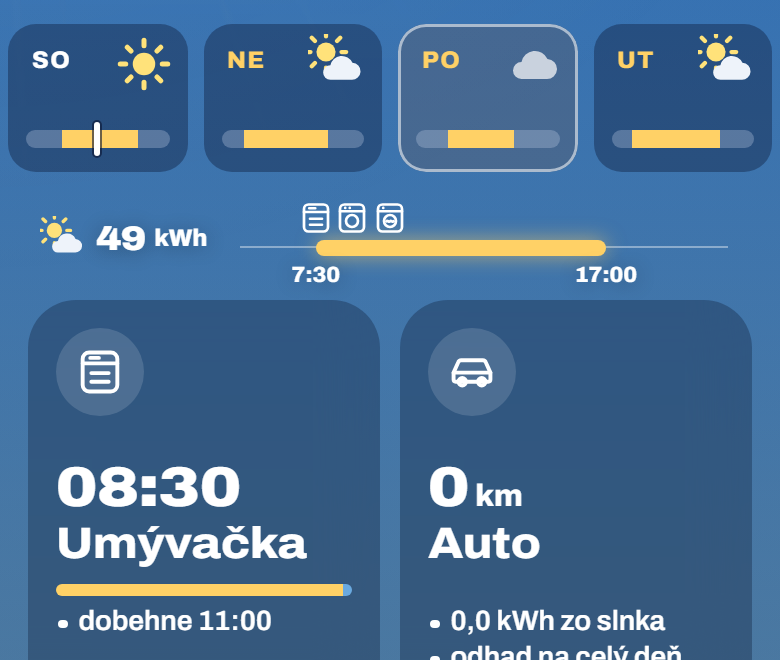
A Počasie · kWh · okno (tvoj návrh)
Vľavo ikona počasia a predpoveď výroby za deň, vpravo ikona práčky a okno, keď slnko stačí na veľké spotrebiče. Čiara medzi nimi je prerušovaná: je to budúcnosť, nič po nej netečie.
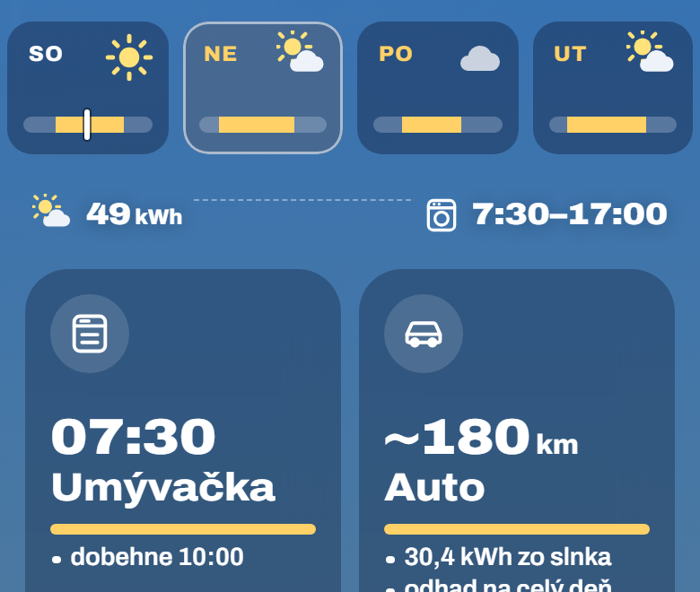
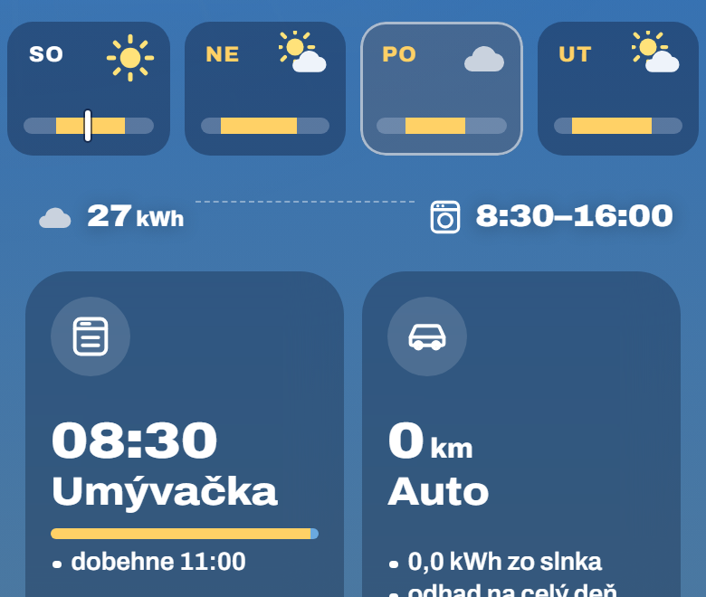
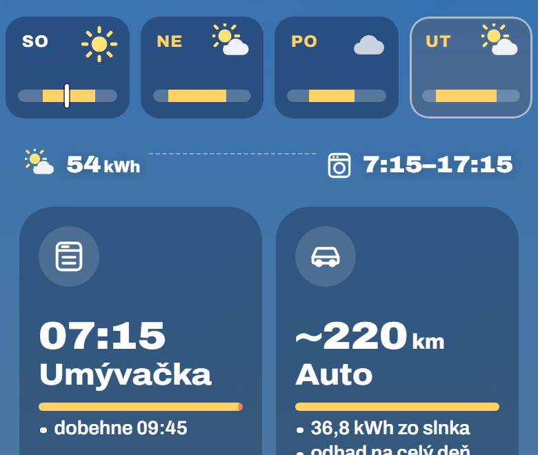
- Najužitočnejšie čísla dňa naraz: koľko vyrobí a odkedy dokedy zapínať.
- Najjednoduchšie na výpočet, appka obe čísla už má (predpoveď dňa a okná pásu dní).
- Ikona počasia a okno sú už v čipe dňa hneď nad poľom (okno ako žltý pásik), takže pole ich opakuje, len presne.
- Deň s viacerými oknami (prestávka cez obed) sa do jedného „od–do“ nezmestí, musel by ukázať najdlhšie okno alebo prvý začiatok a posledný koniec.
B Tok celého dňa
Ten istý riadok ako pri dnešku, len za celý deň v kWh: koľko vyrobí slnko, koľko z toho zje dom a koľko pôjde do siete (pri slabom dni naopak, koľko sa zo siete dokúpi, šípka modrá a otočená). Šípky stoja, nebežia – deň ešte nezačal.
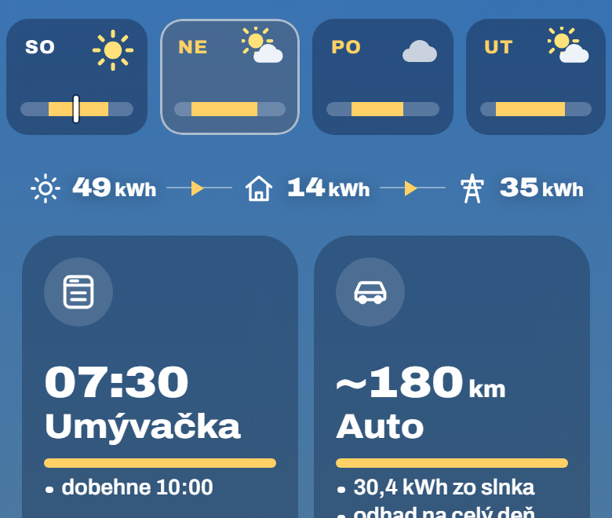
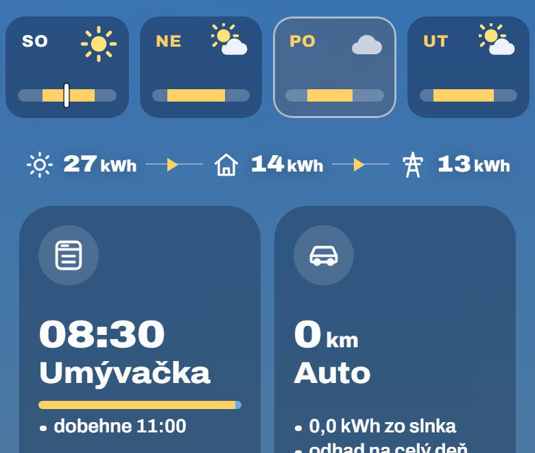
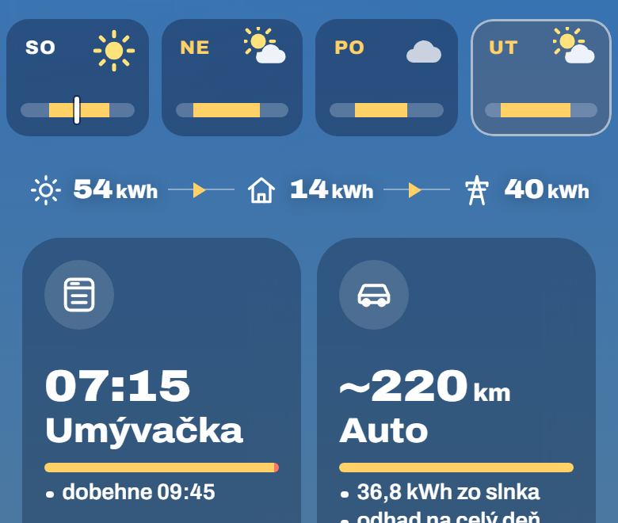
- Vizuálne úplne to isté ako dnešok, prepínanie dní nič „nepreskočí“, zmenia sa len čísla a jednotka.
- Nová informácia, ktorú čip nemá: koľko ostane navyše (alebo bude chýbať).
-
Dom a sieť sú odhad z naučenej spotreby (
ctx.dom) a plánu spotrebičov. Bez naučeného modelu by bolo len slnko. Pri zdroji bez elektromera dom ani sieť appka nepozná ani dnes. - Nehovorí, kedy zapnúť – to ostáva na dlaždiciach pod poľom.
- Ráta to cez deň „netto“: 35 kWh do siete neznamená, že večer netreba nič zo siete.
C Os dňa s oknom a spotrebičmi
Vľavo počasie a kWh, vpravo os dňa (tá istá ako v čipe, od 5:00 do 21:00): zlaté okno s časmi pod koncami a nad ním malé ikony spotrebičov v čase, keď ich plán zapne. Ikony, ktoré by sa prekrývali, sa odsunú vedľa seba.
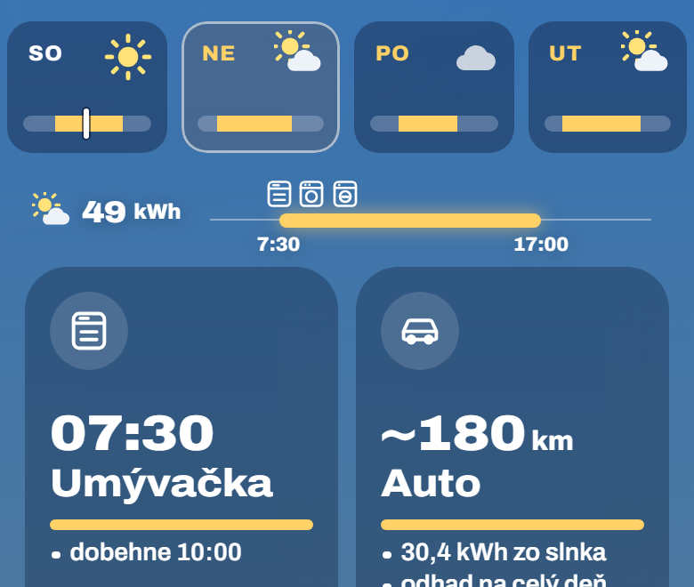
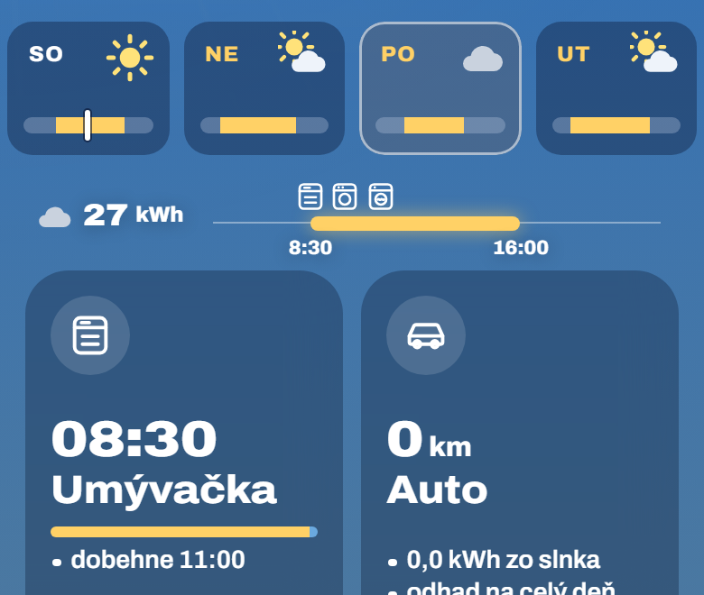
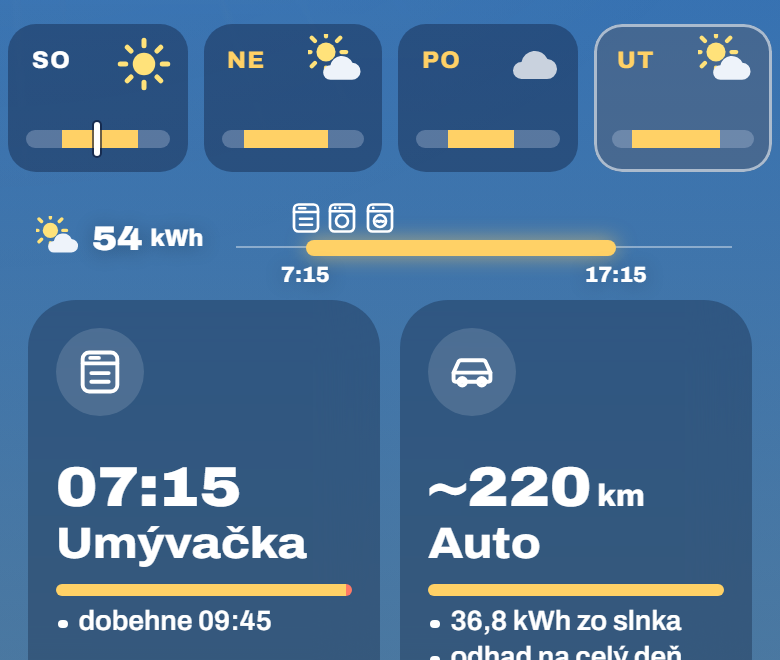
- Najviac obraz, najmenej textu: na prvý pohľad vidno, kde v dni je slnko a čo naň pripadne.
- Viac okien za deň zvládne prirodzene (viac zlatých úsekov).
- Ikony spotrebičov opakujú dlaždice hneď pod poľom; pri troch spotrebičoch ráno sa tlačia k sebe.
- Časy pod oknom sú malé (11 px), na slnku sa horšie čítajú.
- Najviac kódu: os, odsúvanie ikon, viac okien.
Rozhodnuté 26. 11. 2026: B, tok dňa
Dom je naučený profil domu (kým sa appka nenaučí, 0,4 kW celý deň) + bojler podľa naučenej potreby pri teplote dňa + typický program každého ďalšieho spotrebiča Plánu dňa; auto nie. Sieť je rozdiel zaokrúhlených čísel. Na rozdiel od textu vyššie sa dom a sieť ukážu aj bez naučeného modelu (s predvolenou spotrebou, tak ako to robí dlaždica auta a Plán dňa), inak by pole bez učenia ostalo s jediným číslom.
Odporúčanie (pred rozhodnutím)
A, lebo jediné hovorí obe veci, pre ktoré sa na budúci deň pozeráš: koľko vyrobí a odkedy dokedy zapínať, a dá sa spočítať z toho, čo appka už má. Opakovanie ikony počasia z čipu by som riešil tak, že ju z poľa vynechám a vľavo bude len slnko ako pri dnešku. B je najbližšie dnešnému poľu vzhľadom, ale čísla domu a siete sú odhad, ktorý ti v skutočnosti nič nepovie o tom, kedy zapnúť. Rozhodneš ty – kým si nevyberieš, v appke nič nemením.